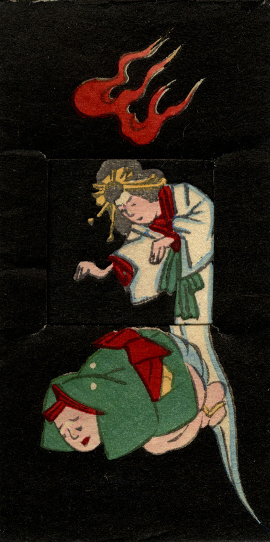

白装束で金の簪を着けた女の幽霊。両手を前に垂らし、かがみ込む男に迫っている。足はない。頭上に火の玉が浮かんでいる。
出典：親書誌：U426_nichibunken_0239：しん板かはりうつしゑ；シンパンカワリウツシエ／日付：2010／資源識別子：U426_nichibunken_0239_0002_0000
Copyright (c)2010- International Research Center for Japanese Studies, Kyoto, Japan. All rights reserved.